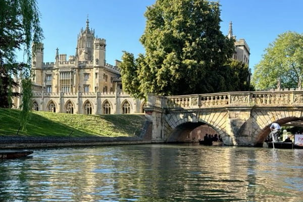

Localização

Cambridge é uma cidade universitária histórica situada no continente europeu, no sudeste do Reino Unido (Inglaterra). Localizada na região de East Anglia e sede do condado de Cambridgeshire, a cidade fica a cerca de 80 km a norte de Londres e é atravessada pelo Rio Cam, caracterizando-se por um relevo predominantemente plano nas margens da bacia pantanosa de The Fens.